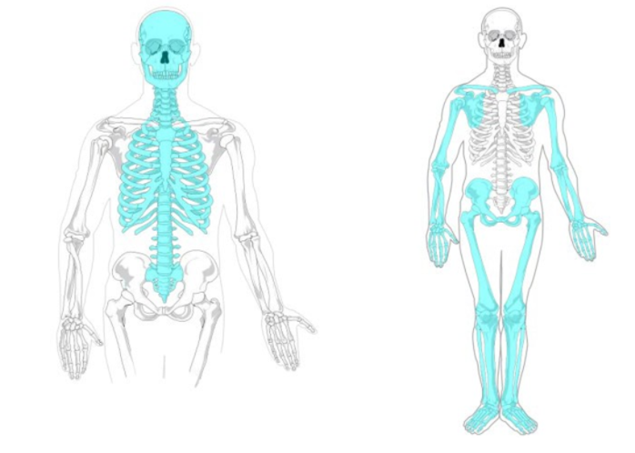

The Skeletal System

Image under Public Domain license from Wikimedia Commons
The axial skeleton (shown in blue on the left) and the appendicular skeleton (shown in blue on the right).
The skeletal system can be divided into two parts: the axial skeleton and the appendicular skeleton. The axial skeleton includes the skull, auditory ossicles, hyoid bone, sternum, ribs, vertebrae, sacrum, and coccyx. The axial skeleton protects the brain, spinal cord, and vital organs within the thorax. The appendicular skeleton includes the bones of the appendages plus the bones of the girdles that attach the appendages to the axial skeleton. These girdle bones are the scapula and clavicle for the upper limbs and the coxal bones for the lower limbs.
We have divided all of the bones and bony landmarks that we want you to learn into three sections over three weeks. The first section will cover the anatomy of the skull. The second will cover the anatomy of the trunk and arms. Finally, the third section will cover the bones of the pelvis and legs. The third section will also cover the types of joints in the skeletal system and the movements that occur at these joints.
It can help as you get started here to jot down notes that help you remember information about the bones you are learning. It can also help to sketch out little drawings to help you visualize the anatomy. The drawings don't have to be pieces of art. You will find that just stick drawing things out to help you recall and visualize these structures and where they are in relation to each other is invaluable. It can help to pull up a picture of a skull from an image search on the internet as you go through the following descriptions.
The Skull
The skull is a network of bones that protect the brain and support the structures of the face. There are about 22 bones in the skull. This number is not absolute because there are some differing opinions on how some of the bones should be classified. All of the bones of the skull except the mandible are joined together by a type of immovable joint called a suture.
The skull has a lot of angles, grooves, canals, raised areas, depressed areas, sinuses, and cavities. These many specializations allow the skull to fulfill its various functions and be innervated by nervous tissue. Many nerves involved in sight, hearing, skin sensation, taste, smell, and balance must negotiate through and around skull bones. A large number of blood vessels must navigate through and around skull bones as well.
The skull has a lot of parts to learn, so we teach it first in the sections of the skeleton. This is so that you can review the skull through the other two skeletal sections and finally get a good handle on it before the skeletal exam. Try not to underestimate how much time you should spend studying the bones over the next few weeks!
Ethmoid Bone
The ethmoid bone is hard to look at because it is buried deep to the face. The bulleted structures of this bone can be seen in the cranial cavity, the socket of the eye, and the nasal cavity. This bone separates the nasal cavity from the brain and makes up the roof of the nose.
- Cribriform Plate: The cribriform plate forms the floor where the two olfactory bulbs rest on either side of the crista galli.
- Crista Galli: The crista galli is a point of attachment for the dura mater.
- Nasal Conchae: The nasal conchae increase the surface area in the nasal cavity and thus facilitate the warming and moistening of air as well as the removal of particles.
- Perpendicular Plate: The perpendicular plate forms the superior portion of the nasal septum that divides the nasal cavity in half.
Fossa, Sinuses, and Sutures
A fossa is a depression or hollow. A sinus is a cavity within a bone. A suture is a union between two bones that creates an immovable joint.
- Mandibular Fossa: The mandibular fossa is the articulation point between the mandible and the skull.
- Frontal Sinus: The frontal sinus is located within the frontal bone. It decreases the weight of the skull and acts as a resonating chamber for the voice.
- Maxillary Sinus: The maxillary sinus is located within the maxilla. It decreases the weight of the skull and acts as a resonating chamber for the voice.
- Sphenoid Sinus: The sphenoid sinus is located within the sphenoid. It decreases the weight of the skull and acts as a resonating chamber for the voice.
- Coronal Suture: The coronal suture connects the parietal bones to the frontal bone.
- Lambdoid Suture: The lambdoid suture connects the occipital bone to the parietal bones.
- Sagittal Suture: The sagittal suture connects the two parietal bones.
- Squamous Suture: The squamous suture joins the temporal and parietal bones.
Frontal Bone
The word Frontal comes from the Latin root frons which means forehead.
- Glabella: The glabella is an area without clear boundaries, but it is generally considered to be the region between the eyebrows and above the nose.
- Supraorbital Foramen: Each supraorbital foramen forms an opening for supraorbital nerves and vessels that innervate the forehead. Supraorbital means above the eye.
- Supra Orbital Margin: The supraorbital margin forms the upper boundary of the anterior orbit depression on the skull.
- Zygomatic Process of Frontal Bone: The zygomatic process of the frontal bone refers to a process of the frontal bone that points towards and actually makes a union with the zygomatic bone. It is NOT actually a part of the zygomatic bone. This naming strategy happens other times in the skull, so be on the lookout for it.
Hyoid Bone
The hyoid bone resides in the superior part of the neck between the chin and Adams apple. It is attached to the skull by muscles and ligaments, not bone. It provides a point of attachment for tongue muscles and neck muscles that elevate the larynx when speaking or swallowing.
Lacrimal Bone
The lacrimal bone is the smallest bone of the face. It is found on the medial surface of the eye socket.
- Nasolacrimal Canal: The nasolacrimal canal is an opening in the lacrimal bone through which tears drain into the nasal cavity. This anatomical structure explains why a runny nose follows a good cry.
Mandible
The mandible forms a moveable joint with other bones of the skull. It is important for containing the lower teeth and for most of the movement that occurs with chewing.
- Alveolar Process of Mandible: The alveolar process of the mandible is the ridges on the mandible that contain the lower teeth.
- Angle of Mandible: The angle of the mandible is located at the posterior border of the mandible where the junction between the mandible and the ramus is.
- Body of Mandible: The body of the mandible is the main part of the mandible.
- Condylar Process of Mandible: The condylar process is an extension for the mandibular condyle.
- Coronoid Process of Mandible: The coronoid process is an attachment point for the temporalis muscle.
- Mandibular Condyle: The mandibular condyle is the portion of the mandible that articulates with the skull.
- Mandibular Foramen: Each mandibular foramen is an opening in the mandible that is on the inner surface of the mandibular ramus. This opening is for the inferior alveolar nerve that innervates the mandibular teeth.
- Mandibular Notch: The mandibular notch is a groove at the top of the ramus that runs between the coronoid process and the condyloid process.
- Mandibular Symphysis: The mandibular symphysis is a line that marks the fusion of both halves of the body of the mandible. It is usually formed sometime during the first two years of life as the two halves of the mandible come together.
- Mental Foramen: Each mental foramen forms an opening that is located on the anterior mandible between the roots for the first and second premolars. These openings are for the mental nerve which provides sensation to the lower lip, chin and gums of the lower teeth.
- Ramus of Mandible: The rectangular process that extends up from the body of the mandible at the posterior region. On top of the ramus we find the mandibular condyle and coronoid process of the mandible.
Maxilla
The maxilla makes up the anterior part of the roof of the mouth and contains the upper teeth. For this reason it is also known as the upper jaw. The maxilla also helps form the eye socket.
- Alveolar Process of Maxilla: The alveolar process of the maxilla is the ridges of the maxilla that contain the upper teeth.
- Anterior Nasal Spine: The anterior nasal spine forms part of the nasal septum.
- Frontal Process of Maxilla: The frontal process of the maxilla forms the sides of the nasal bridge and points up toward the frontal bone.
- Infraorbital Foramen: Each infraorbital foramen is an opening for the infraorbital nerve.
- Palatine Process: The palatine process forms the anterior two-thirds of the hard plate. It is the part of the maxilla that points to and joins with the palatine bone but is not part of the palatine bone.
- Zygomatic Process of Maxilla: The zygomatic process of the maxilla points towards and forms a union with the zygomatic bone but is not part of the zygomatic bone.
Nasal Bone
There are actually two nasal bones. They are quite small and form the bridge of the nose. They can differ quite a bit in size and form between individuals.
Occipital Bone
The occipital bone makes up the very back of the skull. It is somewhat bowl-shaped and makes up the floor of the cranial cavity on the very posterior side.
- External Occipital Protuberance: The external occipital protuberance is a site of attachment for a ligament that helps keep the head erect.
- Foramen Magnum: The foramen magnum is the opening through which the spinal cord and brain connect.
- Hypoglossal Canal: The hypoglossal canals are openings for hypoglossal nerves.
- Nuchal Lines: The nuchal lines are small ridges that serve as points of attachment for neck muscles.
- Occipital Condyles: The occipital condyles are points of articulation between the skull and vertebral column.
Parietal Bone
The two parietal bones form much of the sides and roof of the skull. The Latin root pariet- means wall.
Spenoid Bone
The sphenoid bone resembles a butterfly. It is a single bone that spans the entire breadth of the skull. It is situated towards the front of the skull, but much of it is hidden behind the face. It is another bone that helps make up the eye socket.
- Foramen Lacerum: Each foramen lacerum is an artifact of the dried skull that is filled with cartilage in life.
- Foramen Ovale: Each foramen ovale is an opening for the mandibular division of the trigeminal nerve.
- Foramen Rotundum: Each foramen rotundum is an opening for the maxillary division of the trigeminal nerve.
- Foramen Spinosum: Each foramen spinosum is an opening for the middle meningeal artery.
- Greater Wing of Sphenoid Bone: The greater wing is found immediately anterior to the temporal bone and forms part of the floor of the cranial cavity.
- Inferior Orbital Fissure: The inferior orbital fissure is an opening for blood vessels and nerves.
- Lateral Pterygoid Plate: The lateral pterygoid plate is a site of attachment for muscles involved in mastication.
- Lesser Wing of Sphenoid Bone: The lesser wing makes up the superior border of the superior orbital fissure.
- Medial Pterygoid Plate: The medial pterygoid plate makes up a portion of the nasal cavity.
- Optic Canal: The optic canals are openings for the optic nerves and ophthalmic arteries.
- Sella Turcica: The sella turcica is the location where the pituitary gland rests.
- Superior Orbital Fissure: The superior orbital fissure is an opening for nerves and blood vessels.
Temproral Bone
The temporal bone spans the part of the face called the temple. This bone also contains the ear canal and the structures involved in hearing.
- Carotid Canal: The carotid canals are openings through which the carotid artery and carotid sympathetic nerve plexus pass.
- External Acoustic Meatus: The external acoustic meatus is an opening through which sound waves pass as they travel to the ear drum.
- Internal Acoustic Meatus: The internal acoustic meatus is an opening through which the facial and vestibulocochlear nerves pass.
- Jugular Foramen: Each jugular foramen is an opening through which the internal jugular vein and various nerves pass.
- Mastoid Process: The mastoid process provides site of attachment for neck muscles involved in head rotation.
- Styloid Process: The styloid process is an attachment site for three muscles to the tongue, hyoid, and pharynx.
- Stylomastoid Foramen: Each stylomastoid foramen is an opening through which the facial nerve passes.
- Zygomatic Process: The zygomatic process of the temporal bone is part of the zygomatic arch and an attachment point for muscles that move the mandible.
Vomer
The vomer is a small bone that is part of the nasal septum which divides the nasal cavity in half. If you look in the nasal cavity anteriorly you will see a plate of bone right in the center. The top part of this plate is the perpendicular plate of the ethmoid bone. The bottom part of this plate is the vomer. If you look at the center plate of bone from the posterior nasal cavity, the entire plate is the vomer.
Zygomatic Bone
The zygomatic bone is the cheek bone. It also helps make up part of the eye socket.
- Infraorbital Margin: The lower edge or margin of the eye socket. The maxilla forms the medial part of this margin.
- Temporal Process of Zygomatic Bone: The temporal process of the zygomatic bone is a connection to the temporal bone that makes up part of the zygomatic arch.
- Zygomatic Arch: The zygomatic arch is made up of the joining processes of the zygomatic and temporal bones that forms a bridge across the side of the skull.